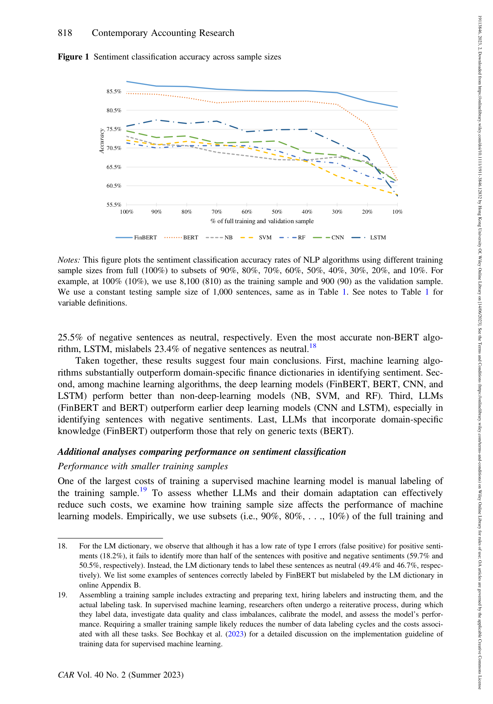
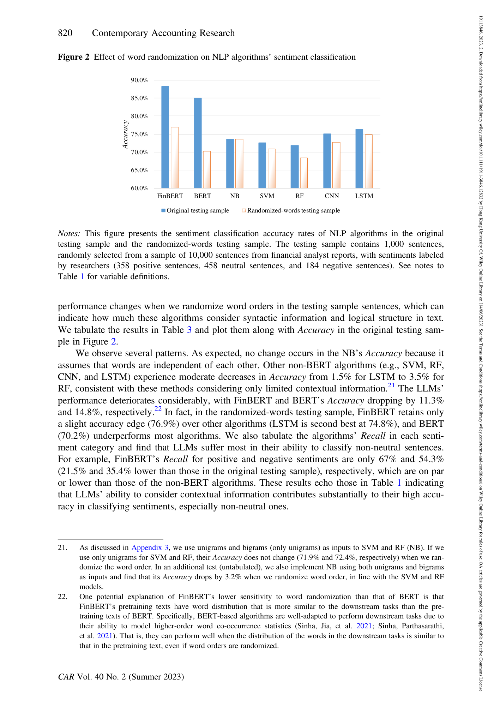

FinBERT: Mô Hình Ngôn Ngữ Lớn Đặc Thù Tài Chính Để Trích Xuất Thông Tin Từ Văn Bản Kế Toán
Chúng tôi phát triển FinBERT, một mô hình ngôn ngữ lớn (Large Language Model) tiên tiến được huấn luyện thích nghi chuyên biệt cho lĩnh vực tài chính - kế toán. FinBERT tích hợp sâu sắc tri thức tài chính và có khả năng nắm bắt ngữ cảnh vượt trội. Sử dụng mẫu 10.000 câu gán nhãn thủ công từ các báo cáo phân tích, FinBERT vượt trội hoàn toàn so với Từ điển Loughran & McDonald (LM) và các thuật toán học máy khác (Naïve Bayes, SVM, Random Forest, CNN, LSTM) trong phân loại sắc thái câu. FinBERT đặc biệt xuất sắc trong việc phát hiện sắc thái của các câu mà mô hình khác gắn nhãn nhầm là "Trung tính". Lợi thế của FinBERT duy trì vững vàng ngay cả khi cỡ mẫu huấn luyện giảm xuống 10% và trên các thuật ngữ tài chính hiếm gặp. FinBERT cũng đạt độ chính xác 89,5% trong phân loại thảo luận ESG. Cuối cùng, nghiên cứu chứng minh các phương pháp truyền thống đánh giá thấp mức độ truyền tải thông tin của văn bản kế toán ít nhất 18% so với FinBERT.
1 MỞ ĐẦU & TẦM QUAN TRỌNG CỦA DỮ LIỆU VĂN BẢN KẾ TOÁN
Hơn 80% thông tin công bố của các doanh nghiệp tồn tại dưới dạng văn bản phi cấu trúc: Thuyết minh BCTC (Footnotes), Báo cáo MD&A, biên bản họp hội nghị báo cáo lợi nhuận, báo cáo phân tích tài chính. Khi doanh nghiệp gặp khó khăn hoặc muốn xào nấu sổ sách, ban lãnh đạo thường sử dụng ngôn từ vòng vo, thuật ngữ mơ hồ trong phần thuyết minh để che giấu rủi ro.
Phương pháp từ điển coi văn bản như "túi từ", đếm tần suất xuất hiện các từ tích cực/tiêu cực. Nó hoàn toàn bất lực trước ngữ cảnh phủ định và từ ngữ đa nghĩa trong tài chính (như từ "liability", "depreciation", "credit").
2 PRETRAINING & CƠ CHẾ SELF-ATTENTION CỦA FinBERT
FinBERT được xây dựng trên kiến trúc Transformer 12 tầng với cơ chế Self-Attention. Mô hình được huấn luyện trước trên 2,5 triệu đoạn văn bản từ các báo cáo 10-K, 10-Q của các công ty niêm yết Mỹ và các cuộc họp hội nghị phân tích tài chính.

3 THỰC NGHIỆM 1: PHÂN LOẠI SẮC THÁI CÂU (SENTIMENT CLASSIFICATION)
Thực nghiệm trên 1.000 câu kiểm thử gán nhãn thủ công (Bảng 1 bài báo gốc):
| Mô Hình / Thuật Toán | Accuracy (%) | Precision (%) | Recall (%) | F1-Score (%) | Recall Tích Cực | Recall Trung Tính | Recall Tiêu Cực |
|---|---|---|---|---|---|---|---|
| FinBERT (Đề xuất) | 88,2% | 87,2% | 88,5% | 87,8% | 88,5% | 87,3% | 89,7% |
| BERT (Google gốc) | 85,0% | 83,6% | 85,1% | 84,2% | 86,3% | 84,1% | 84,8% |
| LSTM (Mạng chuỗi thời gian) | 76,3% | 74,8% | 72,5% | 73,3% | 79,3% | 82,1% | 56,0% |
| CNN (Mạng tích chập) | 75,1% | 74,4% | 71,4% | 72,5% | 73,5% | 83,6% | 57,1% |
| Naïve Bayes (NB) | 73,6% | 71,8% | 70,7% | 71,1% | 75,4% | 78,4% | 58,2% |
| Support Vector Machine (SVM) | 72,6% | 71,0% | 68,8% | 69,6% | 68,7% | 82,8% | 54,9% |
| Random Forest (RF) | 71,9% | 75,4% | 64,8% | 66,8% | 70,7% | 86,9% | 37,0% |
| Từ điển Loughran & McDonald (LM) | 62,1% | 64,4% | 58,0% | 58,1% | 40,2% | 84,3% | 49,5% |


4 THỰC NGHIỆM 2: PHÂN LOẠI THẢO LUẬN ESG
Phân loại văn bản công bố trách nhiệm Môi trường (E), Xã hội (S), Quản trị (G) và Phi ESG:
| Thuật Toán NLP | Accuracy Toàn Diện (%) | Precision (%) | F1-Score (%) | Recall Môi Trường (E) | Recall Xã Hội (S) | Recall Quản Trị (G) |
|---|---|---|---|---|---|---|
| FinBERT | 89,5% | 90,0% | 89,6% | 90,0% | 90,0% | 92,0% |
| BERT (Gốc) | 87,0% | 87,0% | 86,9% | 96,0% | 86,0% | 86,0% |
| LSTM | 86,0% | 86,1% | 86,0% | 90,0% | 82,0% | 86,0% |
| CNN | 82,0% | 82,2% | 81,9% | 86,0% | 70,0% | 88,0% |
| Naïve Bayes | 80,0% | 80,1% | 80,0% | 78,0% | 76,0% | 88,0% |
| Random Forest | 78,0% | 79,9% | 78,3% | 72,0% | 84,0% | 78,0% |
| Support Vector Machine | 75,0% | 75,3% | 75,0% | 78,0% | 66,0% | 74,0% |
5 KIỂM CHỨNG BẰNG PHẢN ỨNG THỊ TRƯỜNG VỐN
Mô hình hồi quy kiểm chứng phản ứng giá cổ phiếu (Cumulative Abnormal Returns - CAR 3 ngày quanh sự kiện họp công bố lợi nhuận):
Kết quả cho thấy hệ số của Tone trích xuất bởi FinBERT đạt β = 0.907 (t = 20.35, p < 0.001), vượt trội hơn từ điển LM (β = 0.640, t = 14.89) ít nhất 18% đến 40%. Điều này chứng minh thị trường vốn thực sự cảm nhận và phản ứng với ngữ cảnh sâu sắc mà FinBERT đã trích xuất thành công.
6 ĐÚC KẾT CHO NGHỀ NGHIỆP KIỂM TOÁN SỐ
- Tự động đọc hiểu Thuyết minh BCTC: Quét hàng trăm trang thuyết minh báo cáo tài chính trong 3 giây, tự động tô đỏ các đoạn văn bản có cấu trúc ngôn ngữ che giấu nợ tiềm tàng hoặc rủi ro pháp lý.
- Rà soát hợp đồng kinh tế theo IFRS 16: Tự động bóc tách các điều khoản thuê tài sản, nghĩa vụ nợ ngầm trong hàng nghìn trang hợp đồng phức tạp.
- Chống "tẩy xanh" (Anti-Greenwashing) trong kiểm toán ESG: Thẩm định tính xác thực của các công bố về phát triển bền vững theo chuẩn IFRS S1 và IFRS S2.
7 TÀI LIỆU THAM KHẢO CHÍNH (REFERENCES)
- Huang, A. H., Wang, H., & Yang, Y. (2023). FinBERT: A large language model for extracting information from financial text. Contemporary Accounting Research, 40(2), 806–841.
- Loughran, T., & McDonald, B. (2011). When is a liability not a liability? Textual analysis, dictionaries, and 10-Ks. The Journal of Finance, 66(1), 35–65.
- Devlin, J., Chang, M. W., Lee, K., & Toutanova, K. (2019). BERT: Pre-training of deep bidirectional transformers for language understanding. NAACL-HLT 2019, 4171–4186.
- Li, F. (2010). The information content of forward-looking statements in corporate filings. Journal of Accounting Research, 48(5), 1049–1102.